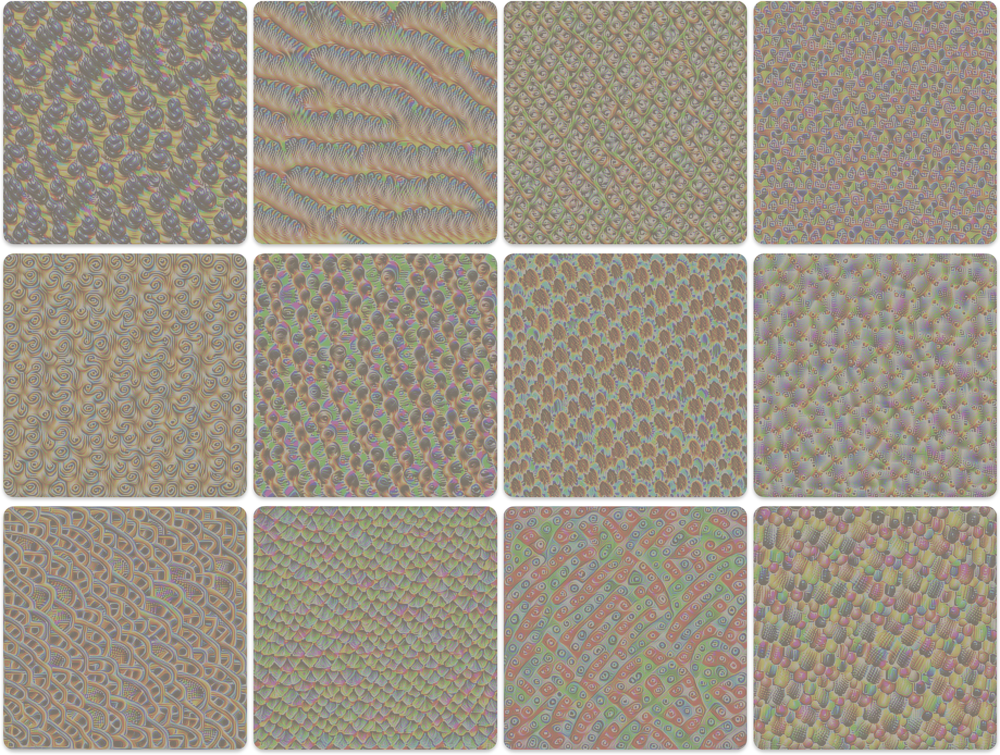
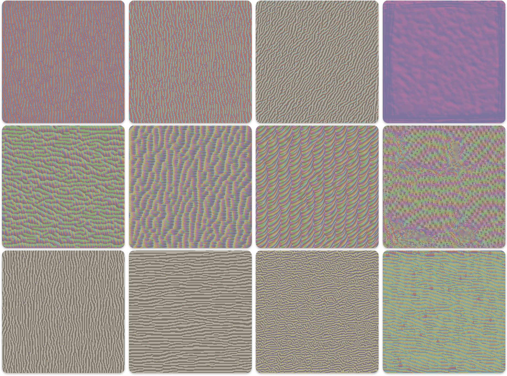
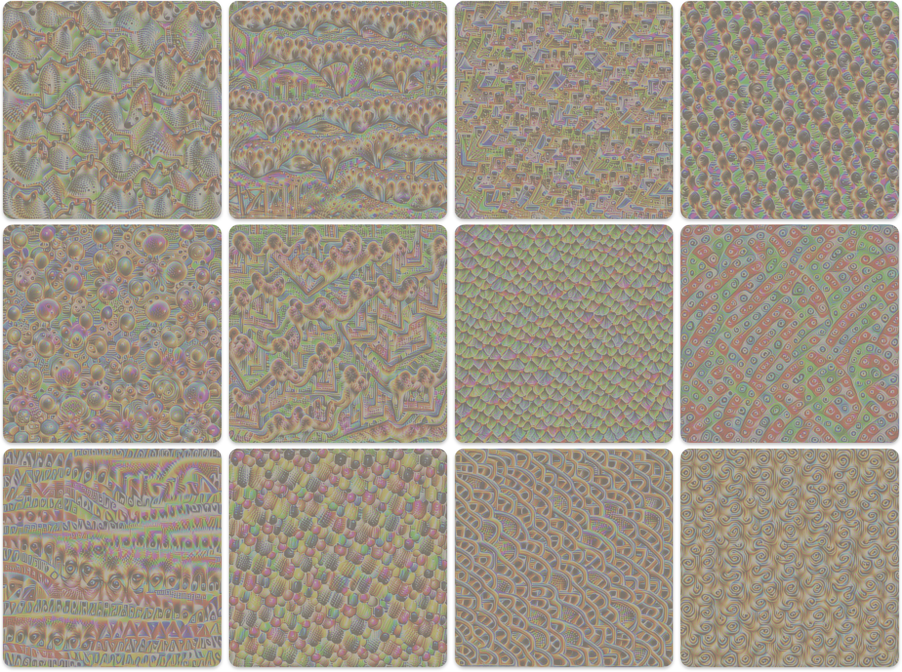

#
Visualizing CNN Features with Activation Maximization

Convolutional Neural Networks (CNNs) have achieved remarkable success in computer vision tasks. However, they are often treated as "black boxes." We know they learn hierarchical features – simple edges and textures in early layers, more complex object parts in deeper layers – but what exactly does a specific neuron "look for"? Feature Visualization, specifically through Activation Maximization, provides a powerful technique to answer this question.
The core idea is fascinatingly simple: To understand what excites a specific neuron, let's generate an input image that makes that neuron fire as strongly as possible.
This post explains the process, based on optimizing an input image for a VGG16 model, including the underlying math.
#
The Goal: Maximizing Neuron Activation
Imagine we have a pre-trained CNN (like VGG16). We select:
- A specific layer within the network (e.g., a convolutional layer).
- A specific channel (or filter/neuron) within that layer's output activation map.
Our goal is to create an image, starting from noise or a gray canvas, that produces the highest possible average activation value for that chosen channel when fed through the network.
#
The Method: Optimization via Gradient Ascent
We don't train the network; its weights remain fixed. Instead, we optimize the input image itself. How? Using gradients!
- Start: Initialize a random or gray input image,
I. - Forward Pass: Feed the image
Ithrough the frozen network. - Measure Activation: Record the activation value(s) of our target neuron/channel in the target layer. Let's denote the mean activation of channel
cin layerlasa_{l,c}(I). - Calculate Gradient: Compute the gradient of this activation with respect to the pixels of the input image
I. This gradient,∇_I a_{l,c}(I), tells us how to change each pixel inIto increase the activationa_{l,c}the most. - Update Image: Adjust the image pixels slightly in the direction of the gradient (this is gradient ascent).
I ← I + η * ∇_I a_{l,c}(I)whereηis the learning rate. - Repeat: Go back to step 2 with the updated image and repeat for many iterations.
Since most optimization libraries are built for gradient descent (minimization), we typically frame this as minimizing the negative activation:
Objective Function (Basic):
Minimize L_objective = - mean(a_{l,c}(I))
#
The Problem: Unconstrained Optimization Creates Noise
If we only optimize the objective above, the resulting images often look like high-frequency noise or abstract patterns specifically tailored to exploit the network, rather than resembling natural images. The optimizer finds "shortcuts" to maximize activation that don't correspond to meaningful features. This term is nicely discussed in this amazing blogpost
#
The Solution: Regularization
To encourage more "natural" or interpretable images, we add penalty terms to our loss function. These regularizers discourage undesirable image properties.
#
1. Total Variation (TV) Regularization
Purpose: Encourages spatial smoothness by penalizing large differences between adjacent pixel values. This reduces noise and checkerboard artifacts.
Math: The Total Variation loss (
L_TV) sums the squared differences between neighboring pixels horizontally and vertically.L_{TV}(I) = \sum_{i, j} \left( (I_{i+1, j} - I_{i, j})^2 + (I_{i, j+1} - I_{i, j})^2 \right)
(Where
I_{i,j}is the pixel value at rowi, columnj. Often normalized by image size)
#
2. L2 Regularization
Purpose: Penalizes large pixel values (very bright or very dark pixels). It helps keep pixel values within a reasonable range and reduces the overall "energy" of the image.
Math: The L2 loss (
L_L2) is simply the sum of the squared values of all pixels in the image.L_{L2}(I) = \sum_{i, j} I_{i, j}^2 = ||I||_2^2
#
The Combined Loss Function
We combine the negative activation objective with the regularization terms, using weights (λ_TV, λ_L2) to control the influence of each regularizer:
L_{total}(I) = L_{objective} + \lambda_{TV} L_{TV}(I) + \lambda_{L2} L_{L2}(I)
L_{total}(I) = - \text{mean}(a_{l,c}(I)) + \lambda_{TV} \sum_{i, j} \left( (I_{i+1, j} - I_{i, j})^2 + (I_{i, j+1} - I_{i, j})^2 \right) + \lambda_{L2} \sum_{i, j} I_{i, j}^2
We then minimize L_total with respect to the image I using an optimizer like Adam.
#
Making Process More Robust: Input Transformations
Often, an optimizer might find a pattern that only works perfectly at one specific position, scale, or rotation. To find more general, robust features, we can randomly apply small transformations to the image at each optimization step before feeding it into the network:
- Jitter: Randomly shift the image slightly horizontally and vertically.
- Scale: Randomly zoom in or out slightly.
- Rotation: Randomly rotate the image by a small angle.
These transformations force the optimizer to find a core pattern that still activates the target neuron even when slightly perturbed, leading to more semantically meaningful visualizations. Note that the regularization losses (TV, L2) are typically calculated on the original, untransformed image.
#
The Algorithm Summarized
- Initialize: Create image
I(e.g., random noise). SetI.requires_grad = True. - Load Model: Load pre-trained CNN (e.g., VGG16) and set to
eval()mode. Freeze model weights. - Select Target: Choose layer
land channelc. - Register Hook: Attach a forward hook to layer
lto capture its output activations. - Optimizer: Define an optimizer (e.g., Adam) acting on the image
I. - Loop (e.g., 512 steps):
- Zero gradients:
optimizer.zero_grad(). - (Optional) Transform: Apply random jitter/scale/rotate to
Ito getI_transformed. UseI_transformedfor the forward pass, butIfor regularization. If not transforming,I_transformed = I. - Normalize: Apply standard normalization (e.g., ImageNet mean/std) to
I_transformed->I_norm. - Forward Pass:
_ = model(I_norm). (Hook stores activationa_{l}). - Calculate Objective:
L_objective = - mean(a_{l,c}). - Calculate Regularization:
L_TV = tv_loss(I),L_L2 = l2_loss(I). - Calculate Total Loss:
L_total = L_objective + λ_TV * L_TV + λ_L2 * L_L2. - Backward Pass:
L_total.backward(). (Computes∇_I L_total). - Update Image:
optimizer.step(). (UpdatesIbased on gradient). - Clamp:
I.data.clamp_(0, 1). (Keep pixel values in valid range).
- Zero gradients:
- Cleanup: Remove hook.
- Return/Visualize: Denormalize and view the final image
I.
#
Pytorch Implementation
import torch
import torch.nn as nn
import torch.optim as optim
import torchvision.models as models
import torchvision.transforms as T
import numpy as np
from PIL import Image
import matplotlib.pyplot as plt
import random
import torch.nn.functional as F
MODEL = models.vgg16(weights=models.VGG16_Weights.IMAGENET1K_V1)
MODEL.eval() # Set to evaluation mode
DEVICE = torch.device("cuda" if torch.cuda.is_available() else "cpu")
MODEL.to(DEVICE)
for param in MODEL.parameters():
param.requires_grad_(False)
TARGET_LAYER_INDEX = 28
TARGET_CHANNEL_INDEX = 100
IMGNET_MEAN = [0.485, 0.456, 0.406]
IMGNET_STD = [0.229, 0.224, 0.225]
normalize = T.Normalize(mean=IMGNET_MEAN, std=IMGNET_STD)
def denormalize_image(tensor):
"""Denormalizes a tensor image for display."""
tensor = tensor.clone().squeeze(0).cpu()
for t, m, s in zip(tensor, IMGNET_MEAN, IMGNET_STD):
t.mul_(s).add_(m) # Multiply by std and add mean
tensor = torch.clamp(tensor, 0, 1)
return tensor.permute(1, 2, 0).numpy()
def show_image(img_tensor, title=''):
"""Displays a tensor image."""
img_np = denormalize_image(img_tensor)
plt.figure(figsize=(6, 6))
plt.imshow(img_np)
plt.title(title)
plt.axis('off')
plt.show()
activation_storage = {} # To store activations
def get_activation_hook(name):
def hook(model, input, output):
activation_storage[name] = output#.detach()
return hook
def total_variation_loss(img):
"""Calculates Total Variation loss."""
bs_img, c_img, h_img, w_img = img.size()
tv_h = torch.pow(img[:,:,1:,:]-img[:,:,:-1,:], 2).sum()
tv_w = torch.pow(img[:,:,:,1:]-img[:,:,:,:-1], 2).sum()
return (tv_h+tv_w)/(bs_img*c_img*h_img*w_img)
def l2_regularization(img):
"""Calculates L2 norm squared loss."""
return torch.norm(img) ** 2
def random_jitter(img, amount=32):
"""Applies random spatial jitter."""
ox, oy = np.random.randint(-amount, amount+1, 2)
img = torch.roll(torch.roll(img, shifts=(ox,), dims=3), shifts=(oy,), dims=2)
return img
def random_scale(img, scale_factors=[0.9, 0.95, 1.0, 1.05, 1.1]):
"""Applies random scaling."""
scale = random.choice(scale_factors)
h, w = img.shape[-2:]
new_h, new_w = int(h * scale), int(w * scale)
img = F.interpolate(img, size=(new_h, new_w), mode='bilinear', align_corners=False)
start_h = (new_h - h) // 2
start_w = (new_w - w) // 2
if scale > 1.0:
img = img[:, :, start_h:start_h+h, start_w:start_w+w]
else:
pad_h1 = (h - new_h) // 2
pad_h2 = h - new_h - pad_h1
pad_w1 = (w - new_w) // 2
pad_w2 = w - new_w - pad_w1
img = F.pad(img, (pad_w1, pad_w2, pad_h1, pad_h2))
return img
def random_rotate(img, angles=[-10, -5, 0, 5, 10]):
"""Applies random rotation."""
angle = random.choice(angles)
theta = torch.tensor([
[np.cos(np.deg2rad(angle)), -np.sin(np.deg2rad(angle)), 0],
[np.sin(np.deg2rad(angle)), np.cos(np.deg2rad(angle)), 0]
], dtype=torch.float).to(DEVICE)
grid = F.affine_grid(theta.unsqueeze(0), img.size(), align_corners=False)
img = F.grid_sample(img, grid, align_corners=False)
return img
def apply_random_transforms(img, jitter_D=32, scale_D=True, rotate_D=True):
"""Applies a sequence of random transformations."""
processed_img = img
if jitter_D > 0:
processed_img = random_jitter(processed_img, jitter_D)
if scale_D:
processed_img = random_scale(processed_img)
if rotate_D:
processed_img = random_rotate(processed_img)
return processed_img
def visualize_channel(
target_layer_name='target_layer',
channel_index=0,
img_size=224,
num_steps=512,
learning_rate=0.05,
tv_weight=1e-4,
l2_weight=1e-6,
use_transforms=True,
jitter_amount=16,
show_every=64
):
"""Generates an image maximizing a channel's activation."""
# Initialize image (slightly noisy gray)
img = torch.randn(1, 3, img_size, img_size, device=DEVICE) * 0.1 + 0.5
img.requires_grad_(True)
# Optimizer
optimizer = optim.Adam([img], lr=learning_rate, weight_decay=0)
print(f"Optimizing for layer {TARGET_LAYER_INDEX}, channel {channel_index}...")
for step in range(num_steps):
optimizer.zero_grad()
# Apply transformations for robustness
img_transformed = apply_random_transforms(img, jitter_D=jitter_amount, scale_D=use_transforms, rotate_D=use_transforms) if use_transforms else img
# Normalize before feeding to model
img_norm = normalize(img_transformed)
# Forward pass to trigger the hook
_ = MODEL(img_norm)
# Get activation
activation = activation_storage[target_layer_name]
# Calculate losses
# Negative mean activation for the chosen channel
channel_activation = activation[:, channel_index, :, :]
objective = -channel_activation.mean()
tv_loss = total_variation_loss(img) * tv_weight
l2_loss = l2_regularization(img) * l2_weight
total_loss = objective + tv_loss + l2_loss
total_loss.backward()
optimizer.step()
with torch.no_grad():
img.clamp_(0, 1)
if (step + 1) % show_every == 0 or step == 0:
print(f"Step: {step+1:>4}/{num_steps} | Loss: {total_loss.item():.4f} | Objective: {objective.item():.4f} | TV: {tv_loss.item():.4f} | L2: {l2_loss.item():.4f}")
# show_image(img.detach(), title=f'Step {step+1}')
print("Optimization finished.")
# Remove the hook
hook_handle.remove()
activation_storage.clear()
return img.detach()
# Optimize for a specific layer and channel
# final_image = visualize_channel(
# channel_index=100,
# img_size=512,
# num_steps=2048,
# learning_rate=0.05,
# use_transforms=True,
# jitter_amount=8,
# show_every=64
# )
# show_image(final_image)
#
Interpreting the Results
The final generated image represents a stimulus that strongly excites the chosen neuron.
- Early Layers: Expect simple patterns like oriented edges, specific colors, or basic textures.

- Deeper Layers: Expect more complex textures, patterns resembling object parts (eyes, fur, wheels, structures), or even combinations of features.

By visualizing different neurons across different layers, we gain valuable insights into the hierarchical feature representations learned by the CNN.
#
Conclusion
Activation maximization is a powerful technique for demystifying CNNs. By optimizing an input image to maximally stimulate specific neurons and using appropriate regularization and transformations, we can visualize the learned features and gain a deeper understanding of how these complex models perceive the visual world. This is just one approach; related techniques like DeepDream build upon similar principles. Experimenting with different layers, channels, and hyperparameters is key to exploring the rich internal world of CNNs!
#
Interesting Links
This blog is heavily inspired by the Feature Visualization article on Distill.pub.
Have a question? Reach me out via LinkedIn